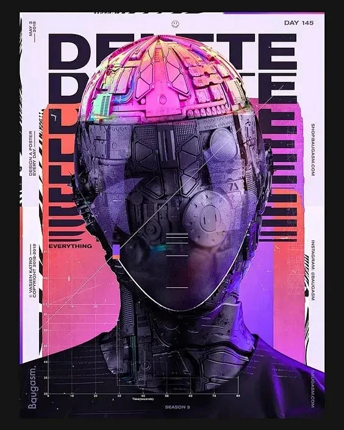
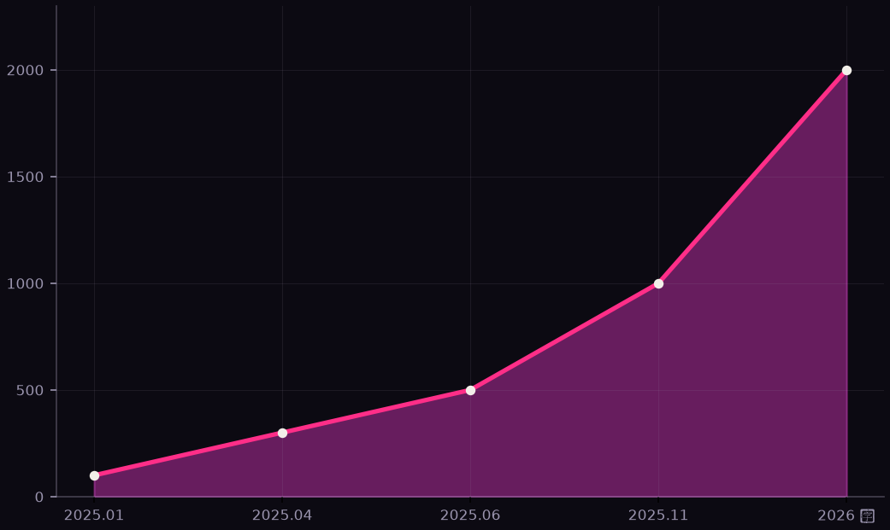

用数据看懂正在发生的变革
市场规模 · 工具格局 · 效率证据 · 开发者态度
基于 2022–2026 年公开调研与厂商披露数据

从市场、工具、效率、态度四个维度，用公开数据拼出 AI 编程的全貌。
口径说明 不同机构界定不同：MarketsandMarkets 预测 2032 年达 1270 亿美元（偏乐观口径）；HHeuristics 预测 2030 年达 240 亿美元。多家机构一致区间：2030 年 240–320 亿美元、年复合增长 25% 以上——主赛道，而非风口。
| 工具 | 关键指标 | 里程碑（来源） |
|---|---|---|
| GitHub Copilot | 2000 万+ 用户；90%+ 财富 100 强采用 | 微软 FY25 Q4 财报披露，2025-07 |
| Cursor | 210 万+ 用户；ARR 10 亿美元 | 24 个月达成，B2B 软件史上最快（2025-11） |
| Claude Code | ARR 10 亿美元；用户周均使用约 20 小时 | 公开发布后约 6 个月达成（2025-05 发布） |
| OpenAI Codex | 开源仓库贡献者增速第 3 名 | GitHub Octoverse 2025 |
| Aider（开源） | 最近版本 88% 代码由其 Agent 自行编写 | 「用 AI 开发 AI」代表案例（arXiv 2025） |
口径提示 Copilot 为累计用户数，Cursor 为产品用户数，Claude Code 为 Anthropic 抽样分析会话数——口径不一，不宜直接横比。

Aider：最近版本 88% 的代码由其 Agent 自行编写——用 AI 开发 AI
Copilot 评审 Agent：每月执行数百万次代码评审
Carvana / EY：需求规格到生产代码，从数小时缩至数分钟
数据给出的不是「买哪个工具」，而是一套落地方法。
· Grand View Research — AI Code Tools Market（2026）
· HHeuristics — AI Coding Agents Market（2026）
· MarketsandMarkets — AI Code Assistants（2026）
· 微软 FY25 Q4 财报 / GitHub CEO 声明（2025）
· GitHub Octoverse 2025
· GitHub Research — Copilot 效率与代码质量（2022–2024）
· Stack Overflow Developer Survey 2025
· JetBrains State of Developer Ecosystem 2025
· Google Cloud DORA 2024 / 2025
· Anthropic — Claude Code 经济研究（2026）
· arXiv — Agentic Much? Coding Agents on GitHub（2025）
· GitHub 2023 开发者调查（92% 采用率）
说明：厂商披露数据与独立调研并存，引用时建议标注机构与年份；详细链接见配套资料《AI编程与Agent编程数据资料.md》。